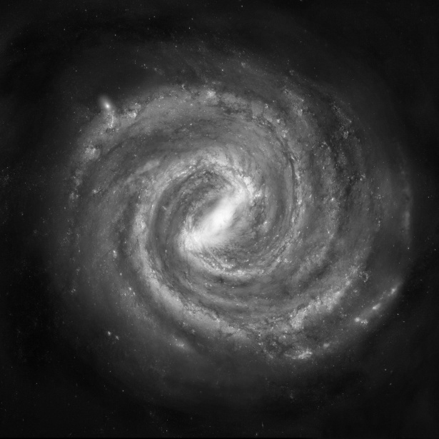

I was born in Kunming, the “City of Eternal Spring” (春城), and moved to the UK during high school. I spent over twelve years in the UK, studying and living in Sheffield, Coventry, and Edinburgh. I now live in Fangshan, Beijing, where BIT’s Liangxiang Campus is located, and I genuinely enjoy my life here.
Some of my basic information can be found below.
Academic positions
- Assistant Professor (Tenure-track)
Beijing Institute of Technology, China
- Postdoctoral Fellow
Maxwell Institute, Edinburgh, UK
Education
- PhD in Mathematics
University of Edinburgh · Tadahiro Oh & Yuzhao Wang
- MSc in Mathematics
University of Warwick · Vedran Sohinger
- BSc in Mathematics
University of Sheffield · Caitlin Buck
Supervision
Postdocs 2 researchers
- 2026–2028 · Shao Liu · Beijing Institute of Technology
- 2026–2028 · Yuanhong Tian · Beijing Institute of Technology
Students 2 students
- 2023–2024 · Ziqian Fang · University of Edinburgh
- 2022–2023 · Yan Ding · University of Edinburgh · now PhD candidate at HKUST (Guangzhou)
Grant
- NSFC, Young Scientists Fund – Type C
- Visiting Scholar, Tianyuan Mathematics Research Center, China
Awards
- “Supervisor of the Year” & “Student Tutor of the Year”, University of Edinburgh student-led Teaching Awards
- Laura Wisewell Travel Scholarship, University of Edinburgh
- EPSRC PhD funding
- Master scholarship funding
- Undergraduate academic excellence funding
Teaching
Beijing Institute of Technology 2024–present
- Fall 2025 · Mathematical Analysis for Engineering · Year 1 · Monday, Wednesday & Friday, 13:20–14:50
- Fall 2024 · Mathematical Analysis · Year 1 · Monday, Wednesday & Friday, 08:00–09:30
University of Edinburgh 2019–2024
- 2023–2024 · Project supervision · Standing waves for the nonlinear Schrödinger equation · Undergraduate project · Ziqian Fang
- Spring 2023 · Lecturing · Honours Algebra · workshops and Algebra Skills (programming)
- 2022–2023 · Project supervision · Standing waves for the nonlinear Schrödinger equation · MMath dissertation · Yan Ding
- Fall 2022 · Lecturing · Accelerated Algebra and Calculus for Direct Entry · joint with Ivan Cheltsov
- Spring 2022 · Teaching assistant · Engineering Mathematics 1a / Natural Sciences 1a; Fundamentals of Pure Mathematics
- Fall 2021 · Teaching assistant · Accelerated Algebra and Calculus for Direct Entry; Introduction to Linear Algebra; Nonlinear Schrödinger Equations
- Spring 2021 · Teaching assistant · Engineering Mathematics 1b / Natural Sciences 1b
- Fall 2020 · Teaching assistant · Engineering Mathematics 1a / Natural Sciences 1a
- Spring 2020 · Teaching assistant · Introduction to Number Theory; Nonlinear Schrödinger Equations
- Fall 2019 · Teaching assistant · MathsBase; Honours Analysis; Engineering Mathematics 1a / Natural Sciences 1a; Introduction to Data Science